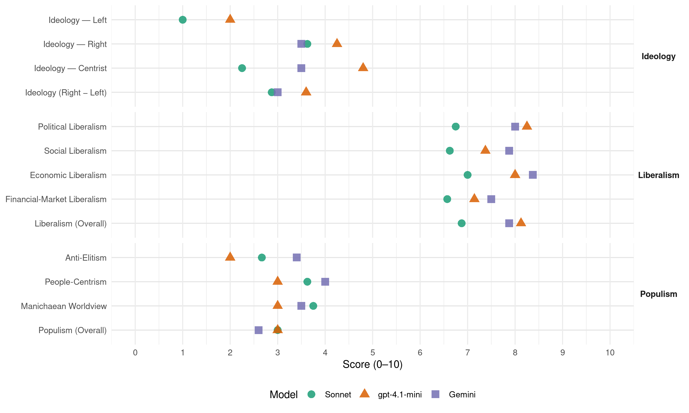

NPA (Australia, 2019)
manifesto_id 63810_201905
Get full text: This site shows derived annotations and short verbatim quotes only. The full manifesto text is © Manifesto Project / WZB — obtain it via manifesto-project.wzb.eu using the manifesto_id above.
Headline scores
| Dimension | Sonnet | gpt-4.1-mini | Gemini |
|---|---|---|---|
| Populism (Overall) | 3.0 | 3.0 | 2.6 |
| Anti-Elitism | 2.7 | 2.0 | 3.4 |
| People-Centrism | 3.6 | 3.0 | 4.0 |
| Manichaean Worldview | 3.8 | 3.0 | 3.5 |
| Ideology (Right − Left) | 2.9 | 3.6 | 3.0 |
| Liberalism (Overall) | 6.9 | 8.1 | 7.9 |
| Political Liberalism | 6.8 | 8.2 | 8.0 |
| Social Liberalism | 6.6 | 7.4 | 7.9 |
| Economic Liberalism | 7.0 | 8.0 | 8.4 |
| Financial-Market Liberalism | 6.6 | 7.1 | 7.5 |
Evidence per dimension
Economic Liberalism
Gemini · score 9.0 · verified · chunk 1
“Expand export opportunities through market-opening trade deals”
and increasing and expanding access to the instant asset write-off. Expand export opportunities through market-opening trade deals. Continue to support farmers by giving them
Gemini · score 9.0 · verified · chunk 2
“lower taxes for small, medium and family businesses”
Australians are better off. We will lower taxes for small, medium and family businesses. We will ensure they have the
Gemini · score 8.0 · verified · chunk 3
“supporting small businesses and jobseekers”
The Morrison Government is committed to supporting small businesses and jobseekers in rural and regional areas
Gemini · score 8.0 · verified · chunk 4
“tariffs are coming down, making our agricultural exports more competitive”
Through our trade agenda and the delivery of trade agreements, tariffs are coming down, making our agricultural exports more competitive.
Gemini · score 9.0 · verified · chunk 5
“commitment to free trade and investment”
or coincidence in this - our commitment to free trade and investment has driven economic growth. More and more
Gemini · score 8.0 · verified · chunk 6
“opening new markets and improving our trade”
has an ambitious trade agenda - because opening new markets and improving our trade conditions means more exports, more jobs
Gemini · score 9.0 · verified · chunk 7
“private capital, rights to own property, entrepreneurialism, and free and open markets”
We believe that the path to peace and liberty demands the pursuit of prosperity through private capital, rights to own property, entrepreneurialism, and free and open markets.
Gemini · score 7.0 · verified · chunk 8
“without raising taxes”
We will do all of this without raising taxes. In this election
gpt-4.1-mini · score 8.0 · verified · chunk 1
“The Morrison Government will build an even stronger and more competitive economy, with lower taxes and more jobs”
The Morrison Government will build an even stronger and more competitive economy, with lower taxes and more jobs. We have created over 1.3 million new jobs. A record number of young Australians and women are in employment. Welfare dependency is at thirty-year lows.
gpt-4.1-mini · score 8.0 · verified · chunk 2
“Lower taxes mean more money to reinvest into the business and create more jobs for Australians”
Lower taxes mean more money to reinvest into the business and create more jobs for Australians. The Morrison Government has already provided lower taxes to around 3.4 million small, medium and family businesses employing over 7 million workers. We have fast-tracked small and medium businesses moving to a lower corporate tax rate: reducing the rate from 30 per cent to 27.5 per cent.
gpt-4.1-mini · score 8.0 · verified · chunk 3
“supporting employers with a range of incentives”
By contrast, the Morrison Government is supporting employers with a range of incentives that will be streamlined to make them easier to navigate.
gpt-4.1-mini · score 8.0 · verified · chunk 4
“Our Free Trade Agreements have delivered. Australia’s agricultural exports to Korea are growing”
Opening markets To grow the agriculture, fisheries and forestry sector we need access to more markets – and better access to existing markets. Our track record speaks for itself. Agriculture, fisheries and forestry contributed more than $53 billion in export earnings in 2017-18, up by over $14 billion from 2011/12 when Labor was in office. Our Free Trade Agreements have delivered. Australia’s agricultural exports to Korea are growing: for example, orange exports were worth $4.6 million in 2017-18, a 59 per cent increase from $2.9 million in 2016-17.
gpt-4.1-mini · score 8.0 · verified · chunk 5
“We are reducing taxes so businesses can grow and employ more Australians”
We are reducing taxes so businesses can grow and employ more Australians. We have fast-tracked tax cuts for around 3.3 million small and medium-sized Australian businesses with a turnover of less than $50 million, enabling them to invest in and invigorate their businesses.
gpt-4.1-mini · score 8.0 · verified · chunk 6
“strong economy with:Over 6 million women in jobs and female workforce participation at a near record high”
The Liberal and Nationals Government has worked to give women greater choices for their lives, improve their engagement with the workforce and build their financial security. The more choices for women, the better the opportunities to support themselves and their families. With careful economic management, the Liberal and Nationals Government has delivered a strong economy with:Over 6 million women in jobs and female workforce participation at a near record high (60.5 per cent).
gpt-4.1-mini · score 8.0 · verified · chunk 7
“Free Trade Agreements (FTAs) with seven of our top eight export markets”
We now have Free Trade Agreements (FTAs) with seven of our top eight export markets and these agreements cover over 70 per cent of trade. Supporting the growth of ASEAN economies which are now collectively our second biggest trading partner.
gpt-4.1-mini · score 8.0 · verified · chunk 8
“International education exports have nearly doubled under the Liberal and Nationals Government”
Record funding for higher education and research - over $17.7 billion for 2019, without raising taxes. Better access to youth allowance for students. International education exports have nearly doubled under the Liberal and Nationals Government.
Sonnet · score 8.0 · verified · chunk 1
“lower taxes and more jobs”
The Morrison Government will build an even stronger and more competitive economy, with lower taxes and more jobs
Sonnet · score 7.0 · verified · chunk 2
“lower taxes for small, medium and family businesses”
We will lower taxes for small, medium and family businesses. We will ensure they have the skills they need for today and tomorrow.
Sonnet · score 6.0 · verified · chunk 3
“boost the economy, our apprenticeships system”
To boost the economy, our apprenticeships system must be able to quickly adapt to emerging skills areas such as information technology and cyber security.
Sonnet · score 7.0 · verified · chunk 4
“free trade agreement with the European Union”
A re-elected Morrison Government will prioritise the conclusion of a free trade agreement with the European Union, the implementation of the India Economic Strategy.
Sonnet · score 7.0 · verified · chunk 5
“commitment to free trade and investment has driven”
our commitment to free trade and investment has driven economic growth. More and more Australian businesses have seized the opportunities
Sonnet · score 7.0 · verified · chunk 6
“strong economy with more choices”
A strong economy means Australian women have more choices about what they do while receiving the essential services they rely on
Sonnet · score 7.0 · verified · chunk 7
“opening new markets and improving our trade conditions”
opening new markets and improving our trade conditions means more exports, more jobs and a stronger economy
Sonnet · score 7.0 · verified · chunk 8
“without raising taxes”
Record funding for all schools across Australia - over $20.7 billion for 2019-20, without raising taxes.
Financial-Market Liberalism
Gemini · score 8.0 · verified · chunk 1
“improving access to finance, ensuring small business is paid”
Strengthen small and medium businesses by lowering business tax, improving access to finance, ensuring small business is paid on time by big business
Gemini · score 8.0 · verified · chunk 2
“enhance equity financing to small businesses”
Growth Fund to enhance equity financing to small businesses, complementing the Australian Business Securitisation
Gemini · score 7.0 · verified · chunk 3
“concessional loans through the Regional Investment Corporation”
businesses are able to access concessional loans through the Regional Investment Corporation. The Morrison Government provided
Gemini · score 7.0 · verified · chunk 4
“concessional loans through the Regional Investment Corporation”
$1 billion of concessional loans through the Regional Investment Corporation for restocking and for debt refinancing.
Gemini · score 8.0 · verified · chunk 5
“Australian Business Securitisation Fund”
access to finance through our Australian Business Securitisation Fund and Australian Business Growth Fund. Growing our
Gemini · score 7.0 · verified · chunk 6
“women can access the finance they need”
Boosting Female Founders start-up fund to ensure women can access the finance they need to achieve their entrepreneurial goals
gpt-4.1-mini · score 7.0 · verified · chunk 1
“Additional resources for our corporate and financial regulators to ensure our businesses do the right thing”
Reforms that strengthen our federation by providing a fairer and more stable approach to the sharing of GST receipts. Additional resources for our corporate and financial regulators to ensure our businesses do the right thing.
gpt-4.1-mini · score 7.0 · verified · chunk 2
“The new $2 billion Australian Business Securitisation Fund will start on July 1 this year”
With access to finance a critical issue, the new $2 billion Australian Business Securitisation Fund will start on July 1 this year. This fund increases small business access to competitive finance by providing more funding for small banks and non-bank lenders. We also know that access to debt financing is not the only constraint to small business growth.
gpt-4.1-mini · score 7.0 · verified · chunk 4
“We have invested in stock assessments and catch recording to inform sustainability and resource sharing assessments.”
Commonwealth Fisheries Resource Sharing Framework All fisheries sectors are concerned about ongoing access to resources. Only the Morrison Government is committed to ensuring fair and equitable sharing of fisheries. In partnership with the sector we will develop a Commonwealth Fisheries Resource Sharing Framework. The Framework will outline the rules for sharing resources across the fisheries sectors and between the Commonwealth and other Australian jurisdictions. To share a resource, you must first know how large it is, how much can be sustainably harvested and the current level of extraction. For that reason we have invested heavily in stock assessments and catch recording. Once we have a complete picture, we will move forward with refined stock assessments and formal resource sharing arrangements.
gpt-4.1-mini · score 7.0 · verified · chunk 5
“The new $2 billion Australian Business Securitisation Fund will start on July 1 this year”
The new $2 billion Australian Business Securitisation Fund will start on July 1 this year. This fund increases small business access to competitive finance by providing more funding for small banks and non-bank lenders.
gpt-4.1-mini · score 8.0 · verified · chunk 6
“invested $60 million in Ecstra, the financial literacy foundation”
We have also established and invested $60 million in Ecstra, the financial literacy foundation that will educate and assist Australians to build their financial capability.
gpt-4.1-mini · score 7.0 · verified · chunk 7
“investor protection, prudential regulation, and transparency”
We will continue to take a stand against protectionism and advance trade liberalisation bilaterally and through the World Trade Organization (WTO). We need to ensure the rules-based trading system remains fit-for-purpose and we will support efforts to improve and strengthen the WTO, recognising some of the legitimate frustrations of the US and others.
gpt-4.1-mini · score 7.0 · verified · chunk 8
“We have established a national interest test for taxpayer-funded university research”
We have also established a national interest test for taxpayer-funded university research to ensure value-for-money from research investments. This does not prevent universities from undertaking other research, but research funded by the taxpayer should be able to demonstrate its benefit for Australia.
Sonnet · score 7.0 · verified · chunk 1
“access to more competitive finance”
The $2 billion Australian Business Securitisation Fund will increase access to more competitive finance following analysis that small to medium enterprises did not have access to the finance they need
Sonnet · score 7.0 · verified · chunk 2
“access to competitive finance by providing”
This fund increases small business access to competitive finance by providing more funding for small banks and non-bank lenders.
Sonnet · score 6.0 · verified · chunk 3
“concessional loans through the Regional Investment Corporation”
Farm businesses are able to access concessional loans through the Regional Investment Corporation. The Morrison Government provided the RIC with an additional $1 billion to help drought affected farmers.
Sonnet · score 6.0 · verified · chunk 4
“review of southern Basin water markets”
Commission the Australian Competition and Consumer Commission to undertake a review of southern Basin water markets.
Sonnet · score 7.0 · verified · chunk 5
“Australian Business Securitisation Fund”
the new $2 billion Australian Business Securitisation Fund will start on July 1 this year. This fund increases small business access to competitive finance
Sonnet · score 6.0 · verified · chunk 6
“women can access the finance they need”
$18 million for the Boosting Female Founders start-up fund to ensure women can access the finance they need to achieve their entrepreneurial goals
Sonnet · score 7.0 · verified · chunk 7
“first home buyers better access to finance”
the Scheme will give first home buyers better access to finance without having to save a 20% deposit
Political Liberalism
Gemini · score 8.0 · verified · chunk 1
“union muscle rather than the rule of law”
Policy based on envy rather than aspiration. Union muscle rather than the rule of law. Mr Shorten will take Australia in a
Gemini · score 8.0 · verified · chunk 2
“defend Australia’s democratic freedoms”
values and beliefs. We will defend Australia’s democratic freedoms and its longstanding commitment to tolerance
Gemini · score 8.0 · verified · chunk 3
“protecting farmers’ privacy”
targeting trespass and protecting farmers’ privacy. Develop a National Fishing Plan
Gemini · score 8.0 · verified · chunk 4
“laws and standards of behaviour”
We understand that Australians expect the laws and standards of behaviour that apply in the physical world should apply equally in the online world.
Gemini · score 8.0 · verified · chunk 5
“laws and standards of behaviour that apply”
We understand that Australians expect the laws and standards of behaviour that apply in the physical world should apply equally
Gemini · score 8.0 · verified · chunk 6
“respecting fundamental human rights and freedoms”
fundamental human right, and that respecting fundamental human rights and freedoms makes Australia and the world safer
Gemini · score 8.0 · verified · chunk 7
“belief in liberal democracy, the rule of law”
The values that guide our foreign policy and our national interests are a belief in liberal democracy, the rule of law, separation of powers, and equality
Gemini · score 8.0 · verified · chunk 8
“freedom of speech is protected on campus”
standards to ensure that freedom of speech is protected on campus through a voluntary
gpt-4.1-mini · score 8.0 · verified · chunk 1
“Almost nine out of 10 Australians who visit the doctor have no out of pocket costs with GP bulk billing rates at a record 86 per cent”
Under the Morrison Government, almost nine out of 10 Australians who visit the doctor have no out of pocket costs with GP bulk billing rates at a record 86 per cent, up from 82 per cent under Labor. Over 133 million free GP services were delivered in 2017-18.
gpt-4.1-mini · score 9.0 · verified · chunk 2
“We will defend Australia’s democratic freedoms and its longstanding commitment to tolerance and the rule of law”
We believe in equal opportunity in a fair and compassionate society irrespective of someone’s race, religion or ethnic background. We will defend Australia’s democratic freedoms and its longstanding commitment to tolerance and the rule of law. A re-elected Morrison Government will ensure Australia remains a cohesive and prosperous society where those who have a go get a fair go.
gpt-4.1-mini · score 8.0 · verified · chunk 3
“The Morrison Government will establish a National Skills Commission”
The Morrison Government will establish a National Skills Commission to build a nationwide approach to skills development that serves students, industry and drives long-term VET reform.
gpt-4.1-mini · score 8.0 · verified · chunk 4
“The Environment Protection and Biodiversity Conservation Act 1999 (EPBC Act) was introduced by the Liberal Nationals in 1999 and it remains the cornerstone of Australian environmental regulation.”
Environmental laws The Morrison Government supports sustainable development that meets high environmental standards. It is important that environmental laws provide the high levels of protection expected by the community, while minimising the regulatory burden on businesses so they can continue to grow the economy. The Environment Protection and Biodiversity Conservation Act 1999 (EPBC Act) was introduced by the Liberal Nationals in 1999 and it remains the cornerstone of Australian environmental regulation.
gpt-4.1-mini · score 8.0 · verified · chunk 5
“The Morrison Government is committed to a safer online environment for all Australians”
The Morrison Government is committed to a safer online environment for all Australians, including families and children. The online world is no longer an optional extra in people’s lives.
gpt-4.1-mini · score 9.0 · verified · chunk 6
“record bulk billing rates”
The Liberal and Nationals Government’s investment in health care is growing year on year - delivering record bulk billing rates, new life saving medicines, record funding for hospitals and more health services for all Australians.
gpt-4.1-mini · score 8.0 · verified · chunk 7
“champion the rights of people with disability”
Australia is taking a strong leadership role on the protection and promotion of global human rights. Australia’s priorities include pursuing the global abolition of the death penalty, ending discrimination on the basis of sexual orientation and the protection of the rights of LGBTI people, ensuring freedom of religion and belief, advancing Indigenous peoples’ rights globally, championing the rights of people with disability, promoting gender equality, and supporting the role of civil society, and national human rights institutions.
gpt-4.1-mini · score 8.0 · verified · chunk 8
“We are committed to freedom of speech on campuses”
Universities should always be truth-seeking institutions. That is why we are committed to freedom of speech on campuses. A re-elected Liberal and Nationals Government will implement the recommendations of the French Review by applying new standards to ensure that freedom of speech is protected on campus through a voluntary code.
Sonnet · score 7.0 · verified · chunk 1
“Union muscle rather than the rule of law”
Policy based on envy rather than aspiration. Union muscle rather than the rule of law. Mr Shorten will take Australia in a very different direction
Sonnet · score 7.0 · verified · chunk 2
“defend Australia’s democratic freedoms”
We will defend Australia’s democratic freedoms and its longstanding commitment to tolerance and the rule of law.
Sonnet · score 6.0 · verified · chunk 3
“independent statutory body with strong investigation”
The NDIS Commission is an independent statutory body with strong investigation and regulatory powers. It can take tough action including banning orders and substantial civil penalties.
Sonnet · score 6.0 · verified · chunk 4
“independent statutory review of the Act”
To ensure the EPBC Act remains best-practice, the Morrison Government will consult widely on an independent statutory review of the Act.
Sonnet · score 6.0 · verified · chunk 5
“mandating transparency reports from the major social media”
including by mandating transparency reports from the major social media platforms, strengthening obligations for faster take-down
Sonnet · score 7.0 · verified · chunk 6
“rule of law”
Union muscle rather than the rule of law. Mr Shorten will take Australia in a very different direction.
Sonnet · score 8.0 · verified · chunk 7
“liberal democracy, the rule of law, separation of powers”
The values that guide our foreign policy and our national interests are a belief in liberal democracy, the rule of law, separation of powers, and equality
Sonnet · score 7.0 · verified · chunk 8
“freedom of speech is protected on campus”
applying new standards to ensure that freedom of speech is protected on campus through a voluntary code.
Liberalism (Overall)
Gemini · score 8.0 · verified · chunk 1
“Expand export opportunities through market-opening trade deals”
and increasing and expanding access to the instant asset write-off. Expand export opportunities through market-opening trade deals. Continue to support farmers by giving them
Gemini · score 8.0 · verified · chunk 2
“defend Australia’s democratic freedoms”
values and beliefs. We will defend Australia’s democratic freedoms and its longstanding commitment to tolerance
Gemini · score 8.0 · verified · chunk 3
“supporting small businesses and jobseekers”
The Morrison Government is committed to supporting small businesses and jobseekers in rural and regional areas
Gemini · score 8.0 · verified · chunk 4
“tariffs are coming down, making our agricultural exports more competitive”
Through our trade agenda and the delivery of trade agreements, tariffs are coming down, making our agricultural exports more competitive.
Gemini · score 8.0 · verified · chunk 5
“commitment to free trade and investment”
or coincidence in this - our commitment to free trade and investment has driven economic growth. More and more
Gemini · score 8.0 · verified · chunk 6
“gender equality is a fundamental human right”
women’s empowerment globally. We believe that gender equality is a fundamental human right, and that respecting fundamental human
Gemini · score 8.0 · verified · chunk 7
“belief in liberal democracy, the rule of law”
The values that guide our foreign policy and our national interests are a belief in liberal democracy, the rule of law, separation of powers, and equality
Gemini · score 7.0 · verified · chunk 8
“freedom of speech is protected on campus”
standards to ensure that freedom of speech is protected on campus through a voluntary
gpt-4.1-mini · score 8.0 · verified · chunk 1
“Under the Morrison Government, almost nine out of 10 Australians who visit the doctor have no out of pocket costs with GP bulk billing rates at a record 86 per cent”
Under the Morrison Government, almost nine out of 10 Australians who visit the doctor have no out of pocket costs with GP bulk billing rates at a record 86 per cent, up from 82 per cent under Labor. Over 133 million free GP services were delivered in 2017-18.
gpt-4.1-mini · score 8.0 · verified · chunk 2
“We will defend Australia’s democratic freedoms and its longstanding commitment to tolerance and the rule of law”
We believe in equal opportunity in a fair and compassionate society irrespective of someone’s race, religion or ethnic background. We will defend Australia’s democratic freedoms and its longstanding commitment to tolerance and the rule of law. A re-elected Morrison Government will ensure Australia remains a cohesive and prosperous society where those who have a go get a fair go.
gpt-4.1-mini · score 8.0 · verified · chunk 3
“The Morrison Government will establish a National Skills Commission”
The Morrison Government will establish a National Skills Commission to build a nationwide approach to skills development that serves students, industry and drives long-term VET reform.
gpt-4.1-mini · score 8.0 · verified · chunk 4
“The Environment Protection and Biodiversity Conservation Act 1999 (EPBC Act) was introduced by the Liberal Nationals in 1999 and it remains the cornerstone of Australian environmental regulation.”
Environmental laws The Morrison Government supports sustainable development that meets high environmental standards. It is important that environmental laws provide the high levels of protection expected by the community, while minimising the regulatory burden on businesses so they can continue to grow the economy. The Environment Protection and Biodiversity Conservation Act 1999 (EPBC Act) was introduced by the Liberal Nationals in 1999 and it remains the cornerstone of Australian environmental regulation.
gpt-4.1-mini · score 8.0 · verified · chunk 5
“The Morrison Government is committed to a safer online environment for all Australians”
The Morrison Government is committed to a safer online environment for all Australians, including families and children. The online world is no longer an optional extra in people’s lives.
gpt-4.1-mini · score 9.0 · verified · chunk 6
“record bulk billing rates, new life saving medicines, record funding for hospitals”
The Liberal and Nationals Government’s investment in health care is growing year on year - delivering record bulk billing rates, new life saving medicines, record funding for hospitals and more health services for all Australians.
gpt-4.1-mini · score 8.0 · verified · chunk 7
“champion the rights of people with disability”
Australia is taking a strong leadership role on the protection and promotion of global human rights. Australia’s priorities include pursuing the global abolition of the death penalty, ending discrimination on the basis of sexual orientation and the protection of the rights of LGBTI people, ensuring freedom of religion and belief, advancing Indigenous peoples’ rights globally, championing the rights of people with disability, promoting gender equality, and supporting the role of civil society, and national human rights institutions.
gpt-4.1-mini · score 8.0 · verified · chunk 8
“We are committed to freedom of speech on campuses”
Universities should always be truth-seeking institutions. That is why we are committed to freedom of speech on campuses. A re-elected Liberal and Nationals Government will implement the recommendations of the French Review by applying new standards to ensure that freedom of speech is protected on campus through a voluntary code.
Sonnet · score 7.0 · verified · chunk 1
“lower taxes for small, medium and family businesses”
the Morrison Government has a proven track record of backing small and medium businesses and a plan for lower taxes for small, medium and family businesses
Sonnet · score 7.0 · verified · chunk 2
“defend Australia’s democratic freedoms”
We will defend Australia’s democratic freedoms and its longstanding commitment to tolerance and the rule of law.
Sonnet · score 6.0 · verified · chunk 3
“keeping our economy strong is vital”
Keeping the economy strong is vital. It is only by building a stronger economy that we can guarantee the essential services that people with disability, their families and their carers rely on.
Sonnet · score 6.0 · verified · chunk 4
“free trade agreement with the European Union”
A re-elected Morrison Government will prioritise the conclusion of a free trade agreement with the European Union, the implementation of the India Economic Strategy.
Sonnet · score 7.0 · verified · chunk 5
“free trade agreements and supporting an Australian Made”
Growing exports by Australian manufacturers including by delivering more free trade agreements and supporting an Australian Made export campaign
Sonnet · score 7.0 · verified · chunk 6
“gender equality is a fundamental human right”
We believe that gender equality is a fundamental human right, and that respecting fundamental human rights and freedoms makes Australia and the world safer
Sonnet · score 8.0 · verified · chunk 7
“pursuit of prosperity through private capital”
We believe that the path to peace and liberty demands the pursuit of prosperity through private capital, rights to own property, entrepreneurialism, and free and open markets.
Sonnet · score 7.0 · verified · chunk 8
“freedom of speech is protected on campus”
applying new standards to ensure that freedom of speech is protected on campus through a voluntary code.
Anti-Elitism
Gemini · score 3.0 · verified · chunk 1
“Militant union bosses will use old-style industrial muscle”
Under Labor, trade deals will stall. Militant union bosses will use old-style industrial muscle to disrupt workplaces and make unsustainable demands
Gemini · score 3.0 · verified · chunk 3
“Labor and their union mates”
regional Australia. Labor and their union mates have consistently opposed the successful
Gemini · score 3.0 · verified · chunk 4
“driven by the unions to reduce trade”
Labor has a poor record delivering trade and market access for our agricultural produce. Labor will be driven by the unions to reduce trade in betrayal of the sector, workers and jobs.
Gemini · score 4.0 · verified · chunk 5
“union-led restrictions on working holiday-makers”
disposable income of over 900,000 Australians while their union-led restrictions on working holiday-makers would hurt the regions.
Gemini · score 4.0 · verified · chunk 8
“crooks and shonks when Labor cut”
fraudulently chewed up by crooks and shonks when Labor cut the number of compliance
gpt-4.1-mini · score 2.0 · verified · chunk 1
“Labor thrives on conflict, including policies to turn retirees against pensioners”
The same cannot be said of Bill Shorten and the Labor Party. Labor thrives on conflict, including policies to turn retirees against pensioners. Their devastating Retiree Tax is a $57 billion tax grab that would hit over 1 million Australians.
gpt-4.1-mini · score 2.0 · verified · chunk 4
“Labor risks it all. Under Labor, farm production will be hit.”
Labor risks it all. Under Labor, farm production will be hit. They have already promised to burden farmers with unnecessary and unprecedented new federal environmental regulations and raise the cost of doing business with additional taxes.
gpt-4.1-mini · score 2.0 · verified · chunk 5
“Labor’s Retiree Tax is a $57 billion tax grab”
Labor’s devastating Retiree Tax is a $57 billion tax grab that would hit over 1 million Australians. This includes more than 900,000 Australians with direct shareholdings, 200,000 self-managed super funds and 1,800 super funds.
gpt-4.1-mini · score 2.0 · verified · chunk 7
“Labor will mean new and higher taxes”
Regional Australians know that Labor will mean new and higher taxes, including:A $57 billion Retirees Tax that would directly affect 900,000 individuals, 200,000 self-managed super funds and 1,800 super funds.
gpt-4.1-mini · score 2.0 · verified · chunk 8
“Bill Shorten was the Education Minister who cut $1.2 billion from public schools”
Bill Shorten was the Education Minister who cut $1.2 billion from public schools. That’s what happens when you can’t manage the economy. Labor’s education policies mean that, when they make a promise, you and your children will pay for it.
Sonnet · score 3.0 · verified · chunk 1
“militant union bosses will use old-style industrial muscle”
Under Labor, trade deals will stall. Militant union bosses will use old-style industrial muscle to disrupt workplaces and make unsustainable demands on business
Sonnet · score 2.0 · verified · chunk 2
“Labor do not believe in enterprise”
The choice at this election is clear. Labor do not believe in enterprise and aspiration. In opposition, Labor voted repeatedly for higher taxes on small business.
Sonnet · score 3.0 · mixed · chunk 3
“Labor pays lip service to Defence”
The choice is clear: Labor pays lip service to Defence but then treats it like an ATM when it runs out of money to pay for their unaffordable spending promises and half-baked schemes.
Sonnet · score 3.0 · verified · chunk 4
“Labor will be driven by the unions”
By contrast, Labor has a poor record delivering trade and market access for our agricultural produce. Labor will be driven by the unions to reduce trade in betrayal of the sector, workers and jobs.
Sonnet · score 3.0 · verified · chunk 5
“union-driven Labor policy that will damage”
This is yet another union-driven Labor policy that will damage regional businesses and communities.
Sonnet · score 3.0 · mixed · chunk 6
“Labor can’t manage money”
Time and again, Labor have shown they can’t manage money. And then they come after yours.
Sonnet · score 3.0 · verified · chunk 7
“Labor’s reckless emissions policies”
independent modelling confirms that by 2030 Labor’s reckless emissions policies will reduce the average full time wage by $9,000
Sonnet · score 2.0 · verified · chunk 8
“universities have splurged on marketing”
This includes the $1.7 billion that leading universities have splurged on marketing themselves in recent years.
Ideology — Centrist
Gemini · score 4.0 · verified · chunk 4
“working in partnership with the community”
We believe that protecting and restoring the environment is best achieved by working in partnership with the community, Landcare groups, small and large businesses
Gemini · score 3.0 · verified · chunk 8
“has a plan while Labor has a scam”
Government has a plan while Labor has a scam. Coalition EARLY CHILDHOOD
gpt-4.1-mini · score 5.0 · verified · chunk 1
“When you work hard, build your business and invest in your community you are having a go”
Small businesses are the beating heart of the Australian economy. When small businesses are healthy, all Australians are better off. It means more jobs, more choice, better living standards and more vibrant and connected communities. When you work hard, build your business and invest in your community you are having a go.
gpt-4.1-mini · score 4.0 · verified · chunk 4
“The Morrison Government has a plan for the agriculture, fisheries and forestry sector”
The Choice Only the Morrison Government has a plan for the agriculture, fisheries and forestry sector. Australia’s farmers know they can only rely on the Morrison Government to stand with them in the good times and bad – we have their back.
gpt-4.1-mini · score 5.0 · verified · chunk 5
“Keeping Australians safe is the Morrison Government’s first priority”
Keeping Australians safe is the Morrison Government’s first priority. The online world brings with it the ability to connect with people all over the world as never before. But with these opportunities come new threats and challenges.
gpt-4.1-mini · score 4.0 · verified · chunk 7
“Only the Liberal and Nationals Government has a plan”
Only the Liberal and Nationals Government has a plan that backs regional Australia with better services and practical plans to ensure that regional Australia thrives.
gpt-4.1-mini · score 6.0 · verified · chunk 8
“Every Australian child, no matter where they live - in the bush or the city - should have access”
Every Australian child, no matter where they live - in the bush or the city - should have access to a world-class education. The Liberal and Nationals Government has secured the funding and reforms to ensure all Australian students can reach their full potential.
Sonnet · score 2.0 · verified · chunk 1
“building a strong economy, creating jobs”
Today, the Coalition is building a strong economy, creating jobs and repairing the budget
Sonnet · score 2.0 · verified · chunk 2
“hardworking Australians tax relief”
This would slow the economy, deny hardworking Australians tax relief and weigh down small businesses looking to invest and create jobs.
Sonnet · score 4.0 · verified · chunk 3
“a Government that values Australia’s farm sector”
A choice between a Government that values Australia’s farm sector and a Labor Party that opposed the Future Drought Fund in the Australian Parliament.
Sonnet · score 2.0 · verified · chunk 4
“a fair go for farming families”
Our Government believes in a fair go for farming families. To realise a $100 billion industry by 2030 we must nurture and foster our next generation of farmers.
Sonnet · score 2.0 · verified · chunk 5
“only the Coalition can be trusted”
Only the Coalition can be trusted to do what is necessary to keep Australians safe online.
Sonnet · score 2.0 · verified · chunk 6
“fair go for all”
Participating in sport means a fair go for all, including women and girls who need equal access
Sonnet · score 2.0 · verified · chunk 7
“Only the Liberal and Nationals Government has a plan”
Only the Liberal and Nationals Government has a plan that backs regional Australia with better services and practical plans to ensure that regional Australia thrives.
Sonnet · score 2.0 · verified · chunk 8
“serves the interests of students and taxpayers”
We will make sure that higher education funding serves the interests of students and taxpayers.
Ideology — Left
gpt-4.1-mini · score 2.0 · verified · chunk 1
“Labor’s $387 billion of higher taxes are bad for business”
Labor do not believe in enterprise and aspiration. Labor’s $387 billion of higher taxes are bad for business. Small business will get hit twice. First, Labor’s higher taxes would directly hit small business. Second, a Shorten Labor government would be the highest taxing government in Australia’s history.
gpt-4.1-mini · score 2.0 · verified · chunk 4
“Labor has already promised to burden farmers with unnecessary and unprecedented new federal environmental regulations and increase the cost of doing business through additional taxes.”
Labor has already promised to burden farmers with unnecessary and unprecedented new federal environmental regulations and increase the cost of doing business through additional taxes. Labor has no interest in unlocking the potential of our regional communities, securing their water supply, creating jobs and delivering agricultural economic opportunities.
gpt-4.1-mini · score 2.0 · verified · chunk 5
“Labor’s Retiree Tax would reduce the disposable income of over 900,000 Australians”
Labor’s Retiree Tax would reduce the disposable income of over 900,000 Australians while their union-led restrictions on working holiday-makers would hurt the regions.
gpt-4.1-mini · score 2.0 · verified · chunk 7
“Policy based on envy rather than aspiration”
Policy based on envy rather than aspiration. Union muscle rather than the rule of law. Mr Shorten will take Australia in a very different direction.
gpt-4.1-mini · score 2.0 · verified · chunk 8
“Bill Shorten was the Education Minister who cut $1.2 billion from public schools”
Bill Shorten was the Education Minister who cut $1.2 billion from public schools. That’s what happens when you can’t manage the economy. Labor’s education policies mean that, when they make a promise, you and your children will pay for it.
Sonnet · score 1.0 · verified · chunk 1
“record investment of $4.8 billion this financial year”
The support builds on our record investment of $4.8 billion this financial year alone in mental health services
Sonnet · score 1.0 · verified · chunk 2
“record funding for public hospital services”
Ensuring a strong economy has enabled the Morrison Government to deliver record funding for public hospital services. Funding has increased by 60 per cent to a record $21 billion.
Sonnet · score 1.0 · verified · chunk 4
“additional taxes”
Labor has already promised to burden farmers with unnecessary and unprecedented new federal environmental regulations and increase the cost of doing business through additional taxes.
Sonnet · score 1.0 · verified · chunk 5
“reducing taxes so businesses can grow”
We are reducing taxes so businesses can grow and employ more Australians.
Sonnet · score 1.0 · verified · chunk 8
“more than 170,000 students from low socio-economic backgrounds”
We are providing more than 170,000 students from low socio-economic backgrounds access to courses each year through the Higher Education Participation and Partnerships Program.
Ideology (Right − Left)
Gemini · score 3.0 · verified · chunk 1
“Militant union bosses will use old-style industrial muscle”
Under Labor, trade deals will stall. Militant union bosses will use old-style industrial muscle to disrupt workplaces and make unsustainable demands
Gemini · score 3.0 · verified · chunk 3
“Labor has no empathy for regional Australia”
through the Drought Communities Program Labor has no empathy for regional Australia. Labor does not appreciate the
Gemini · score 3.0 · verified · chunk 4
“driven by the unions to reduce trade”
Labor has a poor record delivering trade and market access for our agricultural produce. Labor will be driven by the unions to reduce trade in betrayal of the sector, workers and jobs.
Gemini · score 3.0 · verified · chunk 5
“protect our borders and keep Australians safe”
management underpins the investments needed to protect our borders and keep Australians safe. We will not compromise
Gemini · score 3.0 · verified · chunk 8
“has a plan while Labor has a scam”
Government has a plan while Labor has a scam. Coalition EARLY CHILDHOOD
gpt-4.1-mini · score 4.0 · verified · chunk 1
“A choice between a Government that is delivering a strong economy or a Labor Party that would weaken our economy”
There is a lot at stake at this election. And there is a clear choice. A choice between a Government that is delivering a strong economy or a Labor Party that would weaken our economy. A choice between a Government that is fixing the budget or a Labor Party that can’t manage money.
gpt-4.1-mini · score 3.0 · verified · chunk 4
“Labor risks it all. Under Labor, farm production will be hit.”
Labor risks it all. Under Labor, farm production will be hit. They have already promised to burden farmers with unnecessary and unprecedented new federal environmental regulations and raise the cost of doing business with additional taxes.
gpt-4.1-mini · score 4.0 · verified · chunk 5
“Labor’s Retiree Tax is a $57 billion tax grab”
Labor’s devastating Retiree Tax is a $57 billion tax grab that would hit over 1 million Australians. This includes more than 900,000 Australians with direct shareholdings, 200,000 self-managed super funds and 1,800 super funds.
gpt-4.1-mini · score 4.0 · verified · chunk 7
“Labor will mean new and higher taxes”
Regional Australians know that Labor will mean new and higher taxes, including:A $57 billion Retirees Tax that would directly affect 900,000 individuals, 200,000 self-managed super funds and 1,800 super funds.
gpt-4.1-mini · score 3.0 · verified · chunk 8
“Labor is offering Australian parents, teachers and students $387 billion in new taxes. This is not a plan. It is a scam.”
In this election, Labor is offering Australian parents, teachers and students $387 billion in new taxes. This is not a plan. It is a scam. Last time they tried this, they tanked the economy and the Budget.
Sonnet · score 2.0 · verified · chunk 1
“individual enterprise and aspiration”
The Morrison Government will build an even stronger economy based on individual enterprise and aspiration while looking after Australians who need a helping hand
Sonnet · score 2.0 · verified · chunk 2
“keep Australians safe and our borders secure”
Our plan for Australia will: 1.Create 1.25 million more jobs over the next five years… 4.Keep Australians safe and our borders secure.
Sonnet · score 3.0 · verified · chunk 3
“Labor has no empathy for ‘the bush’”
By contrast, Labor has no empathy for ‘the bush.’ Labor under-estimates the value of the farming sector to the Australian economy.
Sonnet · score 4.0 · verified · chunk 4
“Protect the right to farm with new laws”
Protect the right to farm with new laws targeting trespass and protecting farmers’ privacy.
Sonnet · score 4.0 · verified · chunk 5
“Labor’s reckless ‘Medivac’ legislation”
Only the Liberal and Nationals Government will repeal Labor’s reckless ‘Medivac’ legislation.
Sonnet · score 2.0 · verified · chunk 6
“heartless tax grab would hurt vulnerable women”
The Labor Party’s Retirees Tax will impact 30 per cent more women than men… This heartless tax grab would hurt vulnerable women, including pensioners.
Sonnet · score 4.0 · verified · chunk 7
“freeze immigration levels for the next term”
We will freeze immigration levels for the next term of government.
Sonnet · score 2.0 · verified · chunk 8
“Labor has a scam”
The choice is clear on education: the Liberal and Nationals Government has a plan while Labor has a scam.
Ideology — Right
Gemini · score 4.0 · verified · chunk 1
“Militant union bosses will use old-style industrial muscle”
Under Labor, trade deals will stall. Militant union bosses will use old-style industrial muscle to disrupt workplaces and make unsustainable demands
Gemini · score 4.0 · verified · chunk 3
“Labor has no empathy for regional Australia”
through the Drought Communities Program Labor has no empathy for regional Australia. Labor does not appreciate the
Gemini · score 3.0 · verified · chunk 4
“protecting farmers’ privacy”
Protect the right to farm with new laws targeting trespass and protecting farmers’ privacy.
Gemini · score 3.0 · verified · chunk 5
“protect our borders and keep Australians safe”
management underpins the investments needed to protect our borders and keep Australians safe. We will not compromise
gpt-4.1-mini · score 4.0 · verified · chunk 1
“The Morrison Government has secured our borders and is keeping Australians safe”
A choice between a Government that has secured our borders and is keeping Australians safe or a Labor Party that has learned nothing from its border security failures. An uncertain international economic outlook underlines the need for a sure hand in guiding the economy.
gpt-4.1-mini · score 3.0 · verified · chunk 4
“Labor will increase the difficulty, complexity and cost of developing appropriate visa types”
On the other hand, Labor will put access to workers at risk with prohibitive penalty rates and union domination of industry needs. Labor will increase the difficulty, complexity and cost of developing appropriate visa types, robbing employers and employees of opportunity.
gpt-4.1-mini · score 4.0 · verified · chunk 5
“Labor restrictions on working holiday-makers will hurt regional Australia”
Labor restrictions on working holiday-makers will hurt regional Australia Labor and the ACTU’s plan to abandon the second year working holiday visa would remove over 36,000 Working Holiday visa holders from the economy.
gpt-4.1-mini · score 6.0 · verified · chunk 7
“Labor has no plan for regional jobs”
Labor has:No plan for regional jobs - just a plan for higher taxes on family businesses and electricity. No plan for agricultural industries and jobs - just a plan to lock up farms, strip farmers of their right to farm and deny drought affected communities access to our $3.9 billion Future Drought Fund.
Sonnet · score 2.0 · verified · chunk 1
“secured our borders and is keeping Australians safe”
A choice between a Government that has secured our borders and is keeping Australians safe or a Labor Party that has learned nothing from its border security failures
Sonnet · score 3.0 · verified · chunk 2
“keep Australians safe and our borders secure”
Our plan for Australia will: 1.Create 1.25 million more jobs over the next five years… 4.Keep Australians safe and our borders secure.
Sonnet · score 3.0 · verified · chunk 3
“our controlled approach to managing population growth”
Our controlled approach to managing population growth stands in stark contrast to Labor’s track record.
Sonnet · score 5.0 · verified · chunk 4
“Protect the right to farm with new laws”
Protect the right to farm with new laws targeting trespass and protecting farmers’ privacy.
Sonnet · score 5.0 · verified · chunk 5
“regional processing, boat turn-backs”
Sustaining the three vital pillars of secure borders: regional processing, boat turn-backs where it is safe to do so and temporary protection visas.
Sonnet · score 3.0 · verified · chunk 6
“keep Australians safe and keep Australians together”
We are working to keep our economy strong, keep Australians safe and keep Australians together.
Sonnet · score 6.0 · verified · chunk 7
“lower the cap on our migration program”
We will lower the cap on our migration program, build the infrastructure and deliver the services Australians need.
Sonnet · score 2.0 · verified · chunk 8
“national interest test for taxpayer-funded university research”
We have also established a national interest test for taxpayer-funded university research to ensure value-for-money from research investments.
Manichaean Worldview
Gemini · score 4.0 · verified · chunk 4
“in betrayal of the sector”
Labor will be driven by the unions to reduce trade in betrayal of the sector, workers and jobs.
Gemini · score 3.0 · verified · chunk 8
“has a plan while Labor has a scam”
Government has a plan while Labor has a scam. Coalition EARLY CHILDHOOD
gpt-4.1-mini · score 3.0 · verified · chunk 1
“A choice between a Government that is delivering a strong economy or a Labor Party that would weaken our economy”
There is a lot at stake at this election. And there is a clear choice. A choice between a Government that is delivering a strong economy or a Labor Party that would weaken our economy. A choice between a Government that is fixing the budget or a Labor Party that can’t manage money.
gpt-4.1-mini · score 3.0 · verified · chunk 4
“Labor will be driven by the unions to reduce trade in betrayal of the sector”
By contrast, Labor has a poor record delivering trade and market access for our agricultural produce. Labor will be driven by the unions to reduce trade in betrayal of the sector, workers and jobs.
gpt-4.1-mini · score 3.0 · verified · chunk 5
“Labor’s attack on grey nomads Australians over 65 account for 15 per cent”
Labor’s attack on grey nomads Australians over 65 account for 15 per cent of all domestic overnight travellers – with 15.6 million trips during the year ending September 2018 and spending of $9.8 billion.
gpt-4.1-mini · score 3.0 · verified · chunk 7
“Policy based on envy rather than aspiration”
Policy based on envy rather than aspiration. Union muscle rather than the rule of law. Mr Shorten will take Australia in a very different direction.
gpt-4.1-mini · score 3.0 · verified · chunk 8
“Labor is offering Australian parents, teachers and students $387 billion in new taxes. This is not a plan. It is a scam.”
In this election, Labor is offering Australian parents, teachers and students $387 billion in new taxes. This is not a plan. It is a scam. Last time they tried this, they tanked the economy and the Budget.
Sonnet · score 4.0 · verified · chunk 1
“Labor’s $387 billion tax assault”
Bill Shorten believes retirees are a piggy bank to be raided as part of Labor’s $387 billion tax assault. By contrast, the Morrison Government has a proven track record
Sonnet · score 3.0 · verified · chunk 2
“Labor has a plan for hundreds of billions”
Labor has a plan for hundreds of billions of dollars in higher taxes. This would slow the economy, deny hardworking Australians tax relief and weigh down small businesses.
Sonnet · score 4.0 · verified · chunk 3
“Labor has no empathy for regional Australia”
Labor has no empathy for regional Australia. Labor does not appreciate the contribution that Australian farmers make to the national economy. Labor even voted against the landmark Future Drought Fund.
Sonnet · score 4.0 · verified · chunk 4
“Labor’s economy-wrecking plans”
Australia’s environment cannot be supported under Labor’s economy-wrecking plans. If you can’t manage the economy and the Budget, then you can’t invest in the environment.
Sonnet · score 4.0 · verified · chunk 5
“Labor’s economy-wrecking emissions reduction targets”
Labor wants to punish manufacturing and other traditional industries with their economy-wrecking emissions reduction targets that would drive up energy prices
Sonnet · score 3.0 · verified · chunk 6
“heartless tax grab would hurt vulnerable women”
The Labor Party’s Retirees Tax will impact 30 per cent more women than men… This heartless tax grab would hurt vulnerable women, including pensioners.
Sonnet · score 4.0 · verified · chunk 7
“Policy based on envy rather than aspiration”
Labor’s track record tells you there will be budget deficits instead of surpluses. A reckless emissions reduction target instead of a responsible one. Policy based on envy rather than aspiration. Union muscle rather than the rule of law.
Sonnet · score 4.0 · verified · chunk 8
“Labor has a scam”
The choice is clear on education: the Liberal and Nationals Government has a plan while Labor has a scam.
People-Centrism
Gemini · score 4.0 · verified · chunk 4
“working in partnership with the community”
We believe that protecting and restoring the environment is best achieved by working in partnership with the community, Landcare groups, small and large businesses
gpt-4.1-mini · score 3.0 · verified · chunk 1
“When you work hard, build your business and invest in your community you are having a go”
Small businesses are the beating heart of the Australian economy. When small businesses are healthy, all Australians are better off. It means more jobs, more choice, better living standards and more vibrant and connected communities. When you work hard, build your business and invest in your community you are having a go.
gpt-4.1-mini · score 3.0 · verified · chunk 4
“Australia’s farmers know they can only rely on the Morrison Government to stand with them”
The Choice Only the Morrison Government has a plan for the agriculture, fisheries and forestry sector. Australia’s farmers know they can only rely on the Morrison Government to stand with them in the good times and bad – we have their back.
gpt-4.1-mini · score 3.0 · verified · chunk 5
“Keeping Australians safe is the Morrison Government’s first priority”
Keeping Australians safe is the Morrison Government’s first priority. The online world brings with it the ability to connect with people all over the world as never before. But with these opportunities come new threats and challenges.
gpt-4.1-mini · score 3.0 · verified · chunk 7
“Regional Australians know that Labor will mean new and higher taxes”
Regional Australians know that Labor will mean new and higher taxes, including:A $57 billion Retirees Tax that would directly affect 900,000 individuals, 200,000 self-managed super funds and 1,800 super funds.
gpt-4.1-mini · score 3.0 · verified · chunk 8
“Every Australian child, no matter where they live - in the bush or the city - should have access”
Every Australian child, no matter where they live - in the bush or the city - should have access to a world-class education. The Liberal and Nationals Government has secured the funding and reforms to ensure all Australian students can reach their full potential.
Sonnet · score 4.0 · verified · chunk 1
“hard-working Australian families”
making life easier for families by lowering taxes or a Labor Party that will put more strain on households… hard-working Australian families
Sonnet · score 3.0 · verified · chunk 2
“those who have a go get a fair go”
A re-elected Morrison Government will ensure Australia remains a cohesive and prosperous society where those who have a go get a fair go.
Sonnet · score 4.0 · verified · chunk 3
“young Australians in rural and regional communities”
The Morrison Government is delivering a comprehensive pathway for young Australians in rural and regional communities to take them from their education into training and work.
Sonnet · score 4.0 · verified · chunk 4
“Our Government believes in a fair go for farming families”
Tackling intergenerational land transfer and encouraging new farmers. Our Government believes in a fair go for farming families.
Sonnet · score 4.0 · verified · chunk 5
“keeping Australians safe is the Morrison Government’s first priority”
Keeping Australians safe is the Morrison Government’s first priority. The online world brings with it the ability to connect
Sonnet · score 3.0 · verified · chunk 6
“fair go for all”
Participating in sport means a fair go for all, including women and girls who need equal access
Sonnet · score 4.0 · verified · chunk 7
“hardworking Australians across the country”
a $4 billion Urban Congestion Fund which is dedicated to removing the pinch points and traffic snarls which frustrate hardworking Australians across the country
Sonnet · score 3.0 · verified · chunk 8
“Every Australian child, no matter where they live”
Every Australian child, no matter where they live - in the bush or the city - should have access to a world-class education.
Populism (Overall)
Gemini · score 2.0 · verified · chunk 1
“Militant union bosses will use old-style industrial muscle”
Under Labor, trade deals will stall. Militant union bosses will use old-style industrial muscle to disrupt workplaces and make unsustainable demands
Gemini · score 2.0 · verified · chunk 3
“Labor and their union mates”
regional Australia. Labor and their union mates have consistently opposed the successful
Gemini · score 4.0 · verified · chunk 4
“driven by the unions to reduce trade”
Labor has a poor record delivering trade and market access for our agricultural produce. Labor will be driven by the unions to reduce trade in betrayal of the sector, workers and jobs.
Gemini · score 2.0 · verified · chunk 5
“union-led restrictions on working holiday-makers”
disposable income of over 900,000 Australians while their union-led restrictions on working holiday-makers would hurt the regions.
Gemini · score 3.0 · verified · chunk 8
“has a plan while Labor has a scam”
Government has a plan while Labor has a scam. Coalition EARLY CHILDHOOD
gpt-4.1-mini · score 3.0 · verified · chunk 1
“A choice between a Government that is delivering a strong economy or a Labor Party that would weaken our economy”
There is a lot at stake at this election. And there is a clear choice. A choice between a Government that is delivering a strong economy or a Labor Party that would weaken our economy. A choice between a Government that is fixing the budget or a Labor Party that can’t manage money.
gpt-4.1-mini · score 3.0 · verified · chunk 4
“Labor risks it all. Under Labor, farm production will be hit.”
Labor risks it all. Under Labor, farm production will be hit. They have already promised to burden farmers with unnecessary and unprecedented new federal environmental regulations and raise the cost of doing business with additional taxes.
gpt-4.1-mini · score 3.0 · verified · chunk 5
“Labor’s Retiree Tax is a $57 billion tax grab”
Labor’s devastating Retiree Tax is a $57 billion tax grab that would hit over 1 million Australians. This includes more than 900,000 Australians with direct shareholdings, 200,000 self-managed super funds and 1,800 super funds.
gpt-4.1-mini · score 3.0 · verified · chunk 7
“Labor will mean new and higher taxes”
Regional Australians know that Labor will mean new and higher taxes, including:A $57 billion Retirees Tax that would directly affect 900,000 individuals, 200,000 self-managed super funds and 1,800 super funds.
gpt-4.1-mini · score 3.0 · verified · chunk 8
“Labor is offering Australian parents, teachers and students $387 billion in new taxes. This is not a plan. It is a scam.”
In this election, Labor is offering Australian parents, teachers and students $387 billion in new taxes. This is not a plan. It is a scam. Last time they tried this, they tanked the economy and the Budget.
Sonnet · score 3.0 · verified · chunk 1
“A choice between a Government that is delivering”
There is a lot at stake at this election. And there is a clear choice. A choice between a Government that is delivering a strong economy or a Labor Party that would weaken our economy
Sonnet · score 3.0 · verified · chunk 2
“Labor do not believe in enterprise”
The choice at this election is clear. Labor do not believe in enterprise and aspiration. In opposition, Labor voted repeatedly for higher taxes on small business.
Sonnet · score 3.0 · verified · chunk 3
“Labor has no plan, no ideas”
No empathy, no plan, no ideas Labor has no plan to support farmers and farm communities affected by drought.
Sonnet · score 3.0 · verified · chunk 4
“Labor will be driven by the unions”
Labor will be driven by the unions to reduce trade in betrayal of the sector, workers and jobs. The alarm bells have already sounded.
Sonnet · score 3.0 · verified · chunk 5
“You simply cannot trust Labor on border protection”
Only the Liberal and Nationals Government will repeal Labor’s reckless ‘Medivac’ legislation. You simply cannot trust Labor on border protection.
Sonnet · score 3.0 · verified · chunk 6
“Labor have shown they can’t manage money”
Time and again, Labor have shown they can’t manage money. And then they come after yours.
Sonnet · score 3.0 · verified · chunk 7
“Regional Australians aren’t on Labor’s radar”
Regional Australians aren’t on Labor’s radar. Labor doesn’t understand the regions, because they don’t live there.
Sonnet · score 3.0 · verified · chunk 8
“Labor has a scam”
The choice is clear on education: the Liberal and Nationals Government has a plan while Labor has a scam.
Social Liberalism